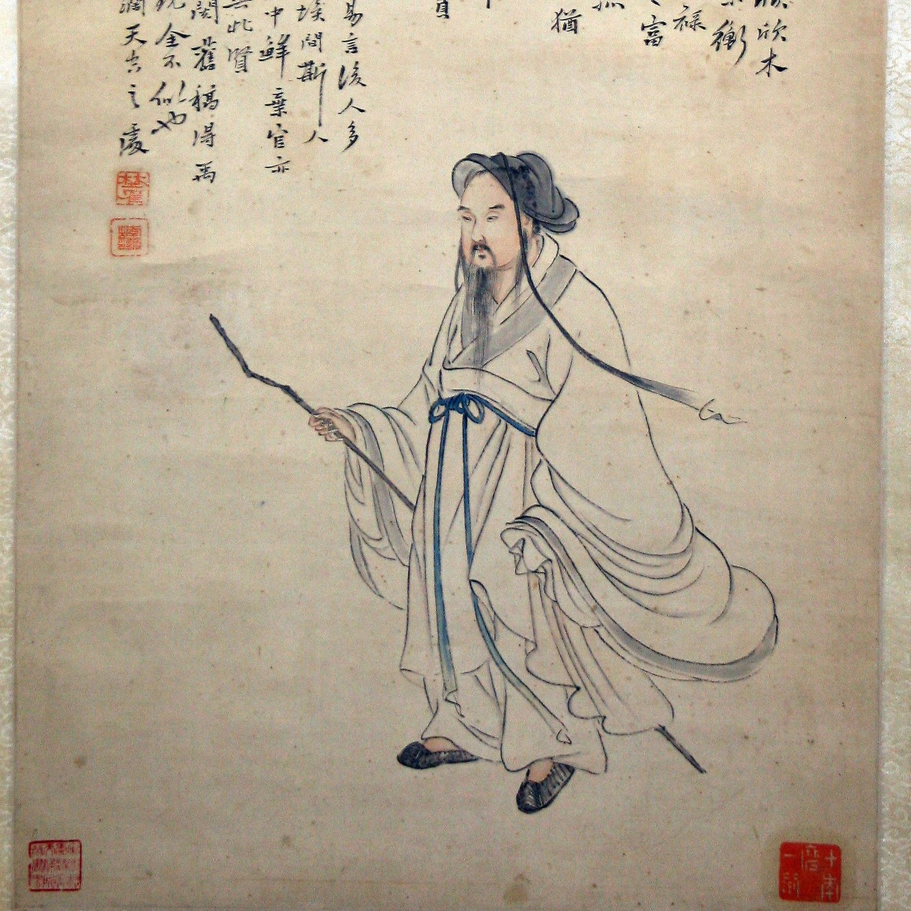

Welcome to Daily Classics. This week's theme is gratitude and harvest, and today's poet left public office for a farm.
His name was Tao Qian, also known as Tao Yuanming. The usual dates for his life are three sixty-five to four twenty-seven, though the scholar Yuan Xingpei argues he was born in three fifty-two. He lived in China under the Eastern Jin dynasty, which the Liu Song replaced in four twenty.
Tao held five official posts over about ten years. The last was magistrate of Pengze, and he kept it for about eighty days. Then he retired to a small farmstead and stayed about twenty-two years. His home was Chaisang, now Jiujiang, in Jiangxi province.
Chrysanthemums and wine recur in his poems. The critic Zhong Rong called him the father of recluse poetry. The later poets Li Bai and Du Fu admired him. He is known as the Poet of the Fields.
The translator is Arthur Waley. He was born Arthur Schloss in eighteen eighty-nine and worked at the British Museum from nineteen thirteen to nineteen twenty-nine. He never visited East Asia. His book A Hundred and Seventy Chinese Poems came out in nineteen eighteen. It includes twelve poems by Tao, whom Waley calls "the greatest of these recluses." Waley spells the name T'ao Ch'ien. It is the same poet.
Listen for the poem called Substance, Shadow, and Spirit. Waley says its last speaker gives the poet's own views. Notice who speaks last, and what that speaker says.
A question to hold while you listen: does this man sound thankful for the life he chose, and if so, for what?
(1)
Shady, shady the wood in front of the Hall:
At midsummer full of calm shadows.
The south wind follows summer’s train:
With its eddying-puffs it blows open my coat.
I am free from ties and can live a life of retirement.
When I rise from sleep, I play with books and harp.
The lettuce in the garden still grows moist:
Of last year’s grain there is always plenty left.
Self-support should maintain strict limits:
More than enough is not what I want.
I grind millet and make good wine:
When the wine is heated, I pour it out for myself.
My little children are playing at my side,
Learning to talk, they babble unformed sounds.
These things have made me happy again
And I forget my lost cap of office.
Distant, distant I gaze at the white clouds:
With a deep yearning I think of the Sages of Antiquity.
(2)
In the quiet of the morning I heard a knock at my door:
I threw on my clothes and opened it myself.
I asked who it was who had come so early to see me:
He said he was a peasant, coming with good intent.
He brought a present of wine and rice-soup,
Believing that I had fallen on evil days.
“You live in rags under a thatched roof
And seem to have no desire for a better lot.
The rest of mankind have all the same ambitions:
You, too, must learn to wallow in their mire.”
“Old man, I am impressed by what you say,
But my soul is not fashioned like other men’s.
To drive in their rut I might perhaps learn:
To be untrue to myself could only lead to muddle.
Let us drink and enjoy together the wine you have brought:
For my course is set and cannot now be altered.”
(3)
A long time ago
I went on a journey,
Right to the corner
Of the Eastern Ocean.
The road there
Was long and winding,
And stormy waves
Barred my path.
What made me
Go this way?
Hunger drove me
Into the World.
I tried hard
To fill my belly:
And even a little
Seemed a lot.
But this was clearly
A bad bargain,
So I went home
And lived in idleness.
(4)
SUBSTANCE, SHADOW, AND SPIRIT
High and low, wise and simple, all busily hoard up the
moments of life. How greatly they err!
Therefore I have to the uttermost exposed the bitterness
both of Substance and Shadow, and have made
Spirit show how, by following Nature, we may dissolve
this bitterness.
Substance speaks to Shadow:
Heaven and Earth exist for ever:
Mountains and rivers never change.
But herbs and trees in perpetual rotation
Are renovated and withered by the dews and frosts:
And Man the wise, Man the divine--
Shall he alone escape this law?
Fortuitously appearing for a moment in the World
He suddenly departs, never to return.
How can he know that the friends he has left
Are missing him and thinking of him?
Only the things that he used remain;
They look upon them and their tears flow.
Me no magical arts can save,
Though you may hope for a wizard’s aid.
I beg you listen to this advice--
When you can get wine, be sure to drink it.
Shadow replies:
There is no way to preserve life.
Drugs of Immortality are instruments of folly.
I would gladly wander in Paradise,
But it is far away and there is no road.
Since the day that I was joined to you
We have shared all our joys and pains.
While you rested in the shade, I left you a while:
But till the end we shall be together.
Our joint existence is impermanent:
Sadly together we shall slip away.
That when the body decays Fame should also go
Is a thought unendurable, burning the heart.
Let us strive and labour while yet we may
To do some deed that men will praise.
Wine may in truth dispel our sorrow,
But how compare it with lasting Fame?
Spirit expounds:
God can only set in motion:
He cannot control the things he has made.
Man, the second of the Three Orders,
Owes his precedence to Me.
Though I am different from you,
We were born involved in one another:
Nor by any means can we escape
The intimate sharing of good and ill.
The Three Emperors were saintly men,
Yet to-day--where are they?
P’ēng lived to a great age,
Yet he went at last, when he longed to stay.
And late or soon, all go:
Wise and simple have no reprieve.
Wine may bring forgetfulness,
But does it not hasten old-age?
If you set your heart on noble deeds,
How do you know that any will praise you?
By all this thinking you do Me injury:
You had better go where Fate leads--
Drift on the Stream of Infinite Flux,
Without joy, without fear:
When you must go--then go,
And make as little fuss as you can.
(5)
Chill and harsh the year draws to its close:
In my cotton dress I seek sunlight on the porch.
In the southern orchard all the leaves are gone:
In the north garden rotting boughs lie heaped.
I empty my cup and drink it down to the dregs:
I look towards the kitchen, but no smoke rises.
Poems and books lie piled beside my chair:
But the light is going and I shall not have time to read them.
My life here is not like the Agony in Ch’ēn,
But often I have to bear bitter reproaches.
Let me then remember, to calm my heart’s distress,
That the Sages of old were often in like case.
(6)
BLAMING SONS
(AN APOLOGY FOR HIS OWN DRUNKENNESS)
White hair covers my temples,
I am wrinkled and seared beyond repair,
And though I have got five sons,
They all hate paper and brush.
A-shu is eighteen:
For laziness there is none like him.
A-hsüan does his best,
But really loathes the Fine Arts.
Yung-tuan is thirteen.
But does not know “six” from “seven.”
T’ung-tzŭ in his ninth year
Is only concerned with things to eat.
If Heaven treats me like this,
What can I do but fill my cup?
(7)
I built my hut in a zone of human habitation,
Yet near me there sounds no noise of horse or coach.
Would you know how that is possible?
A heart that is distant creates a wilderness round it.
I pluck chrysanthemums under the eastern hedge,
Then gaze long at the distant summer hills.
The mountain air is fresh at the dusk of day:
The flying birds two by two return.
In these things there lies a deep meaning;
Yet when we would express it, words suddenly fail us.
(8)
MOVING HOUSE
My old desire to live in the Southern Village
Was not because I had taken a fancy to the house.
But I heard it was a place of simple-minded men
With whom it were a joy to spend the mornings and evenings.
Many years I had longed to settle here:
Now at last I have managed to move house.
I do not mind if my cottage is rather small
So long as there’s room enough for bed and mat.
Often and often the neighbours come to see me
And with brave words discuss the things of old.
Rare writings we read together and praise:
Doubtful meanings we examine together and settle.
(9)
RETURNING TO THE FIELDS
When I was young, I was out of tune with the herd:
My only love was for the hills and mountains.
Unwitting I fell into the Web of the World’s dust
And was not free until my thirtieth year.
The migrant bird longs for the old wood:
The fish in the tank thinks of its native pool.
I had rescued from wildness a patch of the Southern Moor
And, still rustic, I returned to field and garden.
My ground covers no more than ten acres:
My thatched cottage has eight or nine rooms.
Elms and willows cluster by the eaves:
Peach trees and plum trees grow before the Hall.
Hazy, hazy the distant hamlets of men.
Steady the smoke of the half-deserted village,
A dog barks somewhere in the deep lanes,
A cock crows at the top of the mulberry tree.
At gate and courtyard--no murmur of the World’s dust:
In the empty rooms--leisure and deep stillness.
Long I lived checked by the bars of a cage:
Now I have turned again to Nature and Freedom.
(10)
READING THE BOOK OF HILLS AND SEAS
In the month of June the grass grows high
And round my cottage thick-leaved branches sway.
There is not a bird but delights in the place where it rests:
And I too--love my thatched cottage.
I have done my ploughing:
I have sown my seed.
Again I have time to sit and read my books.
In the narrow lane there are no deep ruts:
Often my friends’ carriages turn back.
In high spirits I pour out my spring wine
And pluck the lettuce growing in my garden.
A gentle rain comes stealing up from the east
And a sweet wind bears it company.
My thoughts float idly over the story of King Chou
My eyes wander over the pictures of Hills and Seas.
At a single glance I survey the whole Universe.
He will never be happy, whom such pleasures fail to please!
(11)
FLOOD
The lingering clouds, rolling, rolling,
And the settled rain, dripping, dripping,
In the Eight Directions--the same dusk.
The level lands--one great river.
Wine I have, wine I have:
Idly I drink at the eastern window.
Longingly--I think of my friends,
But neither boat nor carriage comes.
(12)
NEW CORN
Swiftly the years, beyond recall.
Solemn the stillness of this fair morning.
I will clothe myself in spring-clothing
And visit the slopes of the Eastern Hill.
By the mountain-stream a mist hovers,
Hovers a moment, then scatters.
There comes a wind blowing from the south
That brushes the fields of new corn.
Source: Project Gutenberg eBook 42290. Public domain in the United States.
Episode art: Portrait of Tao Yuanming (Tao Qian), hanging scroll attributed to Yu Zhiding (1647 to about 1709). Art Institute of Chicago (1943.120). An imagined portrait, made long after the author's death; no likeness from life survives. Painting more than 300 years old; the museum released its photograph as CC0. Image source.
The commentary was written with Claude Fable 5.2. It is read by synthetic voices from Google Cloud Text-to-Speech, Chirp 3: HD: Kore for the host and Charon for the text. It is checked against the sources listed on this page.